Město
„Baťova škola práce nebyla jen vzdělávací instituce. Byla součástí komplexního systému, který formoval celé město Zlín – jeho vzhled, strukturu i komunitní život.“

„Baťova škola práce nebyla jen vzdělávací instituce. Byla součástí komplexního systému, který formoval celé město Zlín – jeho vzhled, strukturu i komunitní život.“